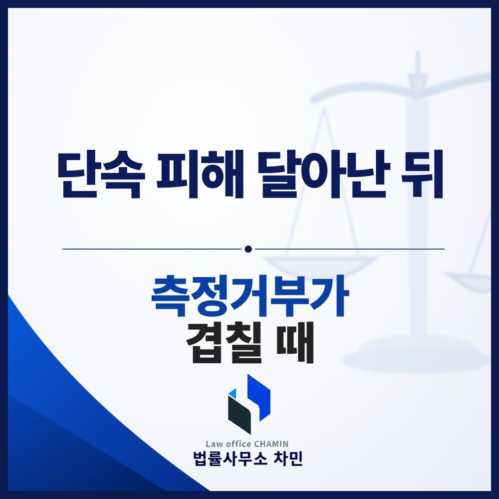

핵심 답변
단속을 피해 달아난 뒤 측정에 응하지 않으면 측정거부죄에 더해 도주 과정의 운전이 위험성을 키운 사정으로 평가됩니다. 초범이라도 가볍게 끝난다고 단정하기 어려우므로, 측정 요구 과정의 기록을 확인하고 그날의 경위와 재범 방지 대책을 구체적으로 설명할 준비가 필요합니다.
단속 현장을 보고 순간적으로 차를 돌렸다가 경찰에 따라잡히고, 그 자리에서 측정까지 거부하는 일이 생각보다 자주 일어납니다. 겁이 나서 한 행동이었다고 해도 수사기관은 도주 과정의 위험과 측정거부를 함께 봅니다. 이런 사건에서 무엇이 무겁게 평가되고 무엇을 설명해야 하는지 정리합니다.

측정거부죄가 성립하는 두 요건
술에 취한 상태에 있다고 인정할 만한 상당한 이유가 있는 사람이 경찰공무원의 측정에 응하지 않으면 1년 이상 5년 이하의 징역이나 500만 원 이상 2천만 원 이하의 벌금에 처합니다(도로교통법 제148조의2 제2항 제1호). 측정거부는 운전면허 취소 사유이기도 합니다(같은 법 제93조 제1항 제3호).
- 상당한 이유: 술 냄새, 얼굴색, 말투, 비틀거림, 운전 모습, 단속을 피한 행동 등을 종합해 판단합니다. 단속을 보고 달아났다는 사정은 이 요건을 뒷받침하는 정황으로 쓰이기 쉽습니다.
- 거부: 한 번 머뭇거린 것만으로 곧바로 거부가 되는 것은 아니고, 경찰이 측정을 여러 차례 요구하고 거부 시 불이익을 알렸는데도 응하지 않았는지를 봅니다. 실무에서는 일정한 간격을 두고 요구를 반복한 기록이 남습니다.
요건 하나하나에 대한 다툼은 측정거부 두 요건 칼럼에서 다뤘습니다.
현장 이탈이 더 무겁게 보이는 이유
음주운전을 처벌하는 이유는 도로 위의 위험 때문입니다. 단속을 피해 차를 돌리거나 속도를 올려 달아나면 그 과정의 운전 자체가 위험을 키운 사정으로 평가됩니다. 운전한 거리가 길었는지, 경찰차가 따라붙었는지, 신호 위반이나 다른 차량과 접촉이 있었는지가 기록으로 남고, 이 사정들은 측정거부 자체와 함께 양형에서 고려됩니다. 처음 입건된 사람이라도 이런 사정이 겹치면 벌금으로 끝날 것이라고 단정하기 어렵습니다.
함께 문제 될 수 있는 다른 혐의
- 공무집행방해: 단속 경찰관을 밀치거나 차로 위협하는 등 폭행·협박이 있었다면 공무집행방해가 따로 문제 됩니다. 단순히 달아나거나 측정에 응하지 않은 것만으로는 성립하지 않는 것이 원칙이지만, 차량으로 경찰관 쪽을 향해 움직인 경우에는 판단이 달라질 수 있습니다.
- 교통사고: 도주 중 사고로 사람이 다쳤다면 교통사고처리특례법이나 특정범죄가중처벌법상 위험운전치상이 함께 검토됩니다.
- 음주측정방해: 측정을 곤란하게 할 목적으로 추가로 술을 마시는 등의 행위는 측정거부와 같은 법정형으로 처벌됩니다(같은 법 제44조 제5항, 제148조의2 제2항 제2호).
먼저 확인할 기록
단속 현장의 바디캠·순찰차 영상, 주취운전자 정황진술보고서, 측정 요구 시각과 횟수가 적힌 기록을 확인해야 합니다. 측정 요구가 어떤 말로 몇 번 이루어졌는지, 불이익 고지가 있었는지에 따라 거부 여부에 대한 판단이 달라질 수 있습니다. 사실관계를 다툴 여지가 없는 사건이라면, 기록에서 실제 운전 거리와 도주 경위를 확인해 과장된 부분이 없는지 살피는 것이 출발점입니다.
설명해야 할 것 — 그날의 경위와 이후의 변화
음주 사건은 처리 건수가 많아 수치와 전력 중심으로 정형화되어 처리되는 경향이 있습니다. 그래서 왜 그날 술을 마시고 운전했는지, 왜 달아났는지에 대한 구체적인 사정은 본인이 설명하지 않으면 기록에 드러나지 않습니다. 가족 문제나 직장 사정처럼 그날의 행동에 영향을 준 사정이 있었다면 그것을 자료로 정리하고, 그 사정이 지금은 어떻게 정리됐는지, 다시 운전대를 잡지 않기 위해 무엇을 바꿨는지(차량 처분, 상담·치료, 생활 변화)를 함께 보여 주어야 합니다. 사정을 말하는 것이 변명으로 들리지 않으려면 반드시 재범 방지 대책과 짝을 이루어야 합니다.
전주에서 입건됐다면
전주시에서 생긴 사건은 장소에 따라 전주완산경찰서나 전주덕진경찰서에서 수사하고, 송치되면 전주지방공소청이 처분하며, 재판은 전주지방법원에서 열립니다. 면허 취소에 대한 행정 절차는 형사 절차와 별도로 진행되므로 통지서를 받은 날짜를 따로 적어 두어야 합니다.